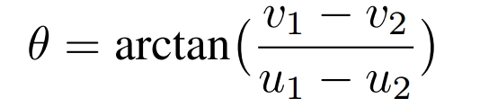

惯例贴一下原文链接
阅读这篇文章建议先去读一读他的baseline，OC-SORT
Abstract
MOT的目标是在帧之间检测和关联所有目标。大多数的方法都是使用强线索（空间信息或者外观信息）完成任务，这些强线索在没有发生遮挡和聚类的时候是十分有用的，一旦发生遮挡和聚类，由于物体高度重叠，空间和外观信息会变得模糊。文章提出了可以用弱线索（高度、检测框置信度、速度方向）作为强线索的补充。
Introduction
MOT中流行的范例习惯将问题分为两个子任务。首先检测每个帧中的对象，其次将他们在不同的框架中联系起来。关联的任务主要通过强线索完成。但是常用的强线索在遇到遮挡和聚类的问题时就会出现退化。如图一所示：

图中展示了强弱线索的辨别能力。绿色实线箭头表示对一对对象的可靠判别，红色虚线表示不可靠的判别，箭头的值越高，表示鉴别越可靠。
可以看出大部分情况下强线索可以分辨出检测框之间的区别，但是红色和橙色框出现了大面积重叠，仅靠交并比和外观线索的判别并不可靠，在这种情况下依靠检测框置信度可以得到更好的区分效果。
作者为了保持SORT简单、在线和实时的特点，使用以下策略利用上述的弱线索：Tracklet置信度建模(TCM)和高度调制IoU (HMIoU)。
Method
Weak Cues Modeling
Tracklet Confidence Modeling
作者改进了传统SORT广泛使用的标准卡尔曼滤波器，增加了两个额外的状态：轨迹置信度c以及其速度分量 $\dot{c}$ :

对于轨迹置信度，作者使用线性预测进行估计。在遮挡发生时，物体的置信度会迅速降低，但是卡尔曼滤波的预测具有滞后性，如图三所示：
因此，作者使用简单的线性预测来估计轨迹的置信状态。线性建模公式如下：

其中ctrk表示保存在Tracklet Memory中的Tracklet置信度。
置信度的代价计算公式如下：

Height Modulated IoU
高度状态在两个方面增强了关联。首先，物体的高度在一定程度上反映了深度信息。对于DanceTrack这样的数据集，检测框的高度主要取决于物体与相机之间的距离。这使得高度状态成为区分高度重叠对象的有效线索。其次，高度状态对不同姿态具有较强的鲁棒性，是一种准确估计的状态，是物体的高质量表征。
两个方框分别定义为（x11, y11, x12, y12）,（x21, y21, x22, y22）
则可以通过基于高度度量计算IoU来生成高度IoU (HIoU)，如下图所示：


Hybrid-SORT
Robust Observation-Centric Momentum
在OC-SORT中，OCM考虑目标中心的速度方向。使用的成本度量是轨迹速度方向θt与轨迹到探测速度方向θd之间的绝对差值，以弧度形式表示为∆θ = |θt - θd|。轨迹波速度方向由轨迹波中两个时间间隔∆t的盒中心获得，轨迹波到检测的速度方向由轨迹波历史盒和新检测盒的中心获得。给定两个点(u1, v1)和(u2, v2)，速度方向按下图所示公式计算。然而，原始OCM的建模容易受到固定时间间隔和稀疏点(即只有目标中心)引起的噪声的影响。

作者通过引入更加鲁棒的速度方向来改进OCM，称之为ROCM，修改包括两个方面。首先，将3帧的固定时间间隔扩展为1 ~ 3的多个时间间隔的叠加；其次，我们用物体的四个角代替它的中心点来计算速度方向。对于多个时间区间和点，ROCM的计算公式如下式所示。

从Figure4可以看出，对于运动复杂的物体，拐角的速度方向保持高度相似，而中心的速度方向几乎相反。
Appearance Modeling
ReID模型遵循BoT-SORT，首先检测对象，然后将结果裁剪的补丁提供给ReID模型。我们使用指数移动平均(EMA)对轨迹图外观信息建模，并利用余弦距离作为度量来计算轨迹图和检测外观特征之间的成本CAppr。
Algorithm Framework
关联阶段主要包括三个阶段:第一阶段是高置信度对象的关联阶段，第二阶段是低置信度对象的关联阶段(ByteTrack中的BYTE)，第三阶段是用最后一次检测恢复丢失的轨迹(OC-SORT中的OCR)。
考虑到所有的强弱线索，最终的成本矩阵为：